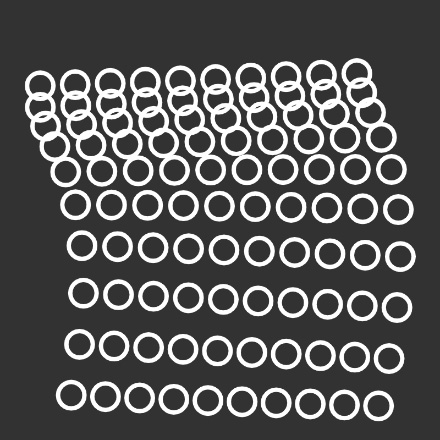
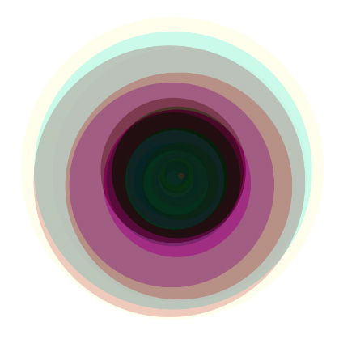
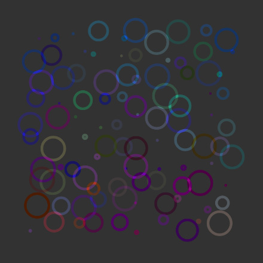

Experimenteren met animatie



De rest van deze les ga je experimenteren met animatie en objecten. Kies één (of meerdere) van de objectgeoriënteerde voorbeelden uit de les, kopiëer de code uit de widget en plak dit in de p5 editor. Zorg dat je ingelogd bent zodat je je werk kunt bewaren. Geef je projectjes een naam en bewaar ze wanneer je er tevreden mee bent.
Wat kun je bijvoorbeeld allemaal uitproberen?
- Hoeveelheid en het soort vormen dat je tekent.
- Positie en beweging van je vormen.
- Snelheid van je animaties.
- Mengen van kleuren mbv. transparantie en
blendMode. - Meer of minder willekeur en/of variatie.
De bedoeling van deze opdracht is dat je wat grip en gevoel krijgt voor het animeren van vormen door bestaande voorbeelden aan te passen, te veranderen, ermee te spelen en dingen uit te proberen. Probeer mooie, steeds veranderende geanimeerde composities te maken. Je hoeft je werk niet in te leveren, maar zorg wel dat je het opslaat want misschien kun je de code nog wel gebruiken voor de eindopdracht.